1. Worker Home
Pass — local fixture. Worker can start a visit without an assignment. Supplied site photo and current work remain available.
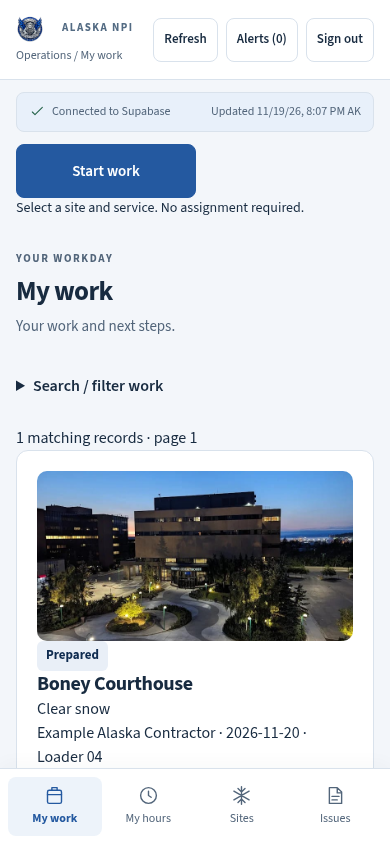
Local fixture, simulated GPS/camera. Thirteen reviewed states; zero automatically detected axe violations. See scope and production acceptance in the full report.
Full audit · axe results · Lighthouse sign-in · Test results
Pass — local fixture. Worker can start a visit without an assignment. Supplied site photo and current work remain available.

Pass — local fixture. Site and service selection, optional crew disclosure and nearest-site suggestion.
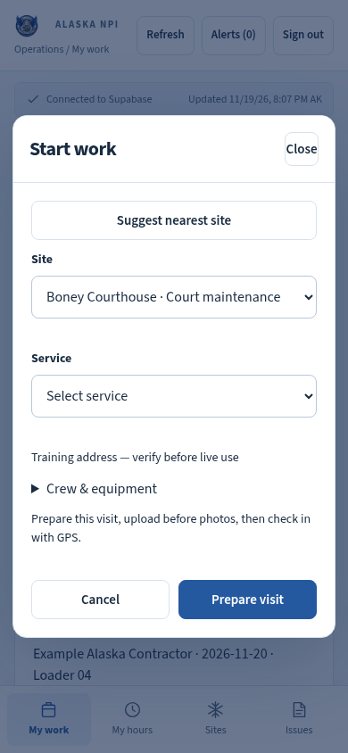
Pass — local fixture. Short service cards and before-photo/start actions.
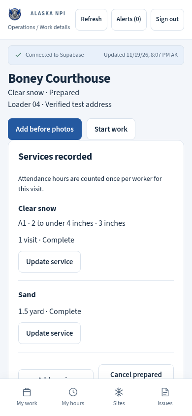
Pass — local fixture. Direct camera capture with keep and retake; synthetic camera feed.
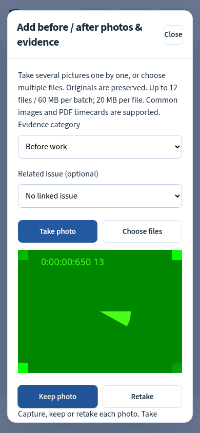
Pass — local fixture. Ruler photo, manual inches and explicit confirmation. Automatic reading is optional.
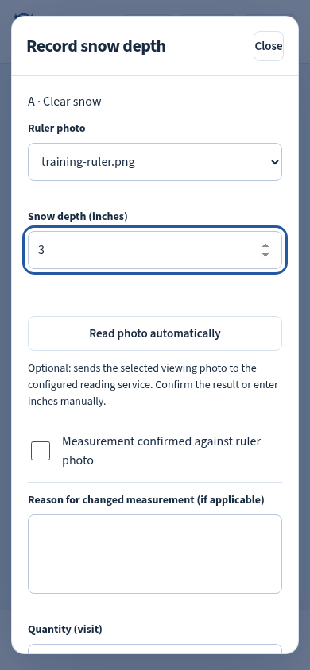
Pass — local fixture. Unavailable automatic reader leaves manual input usable and does not confirm a reading.
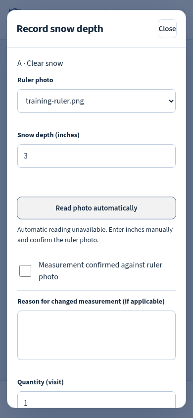
Pass — local fixture. Category, urgency and description use the established issue form.
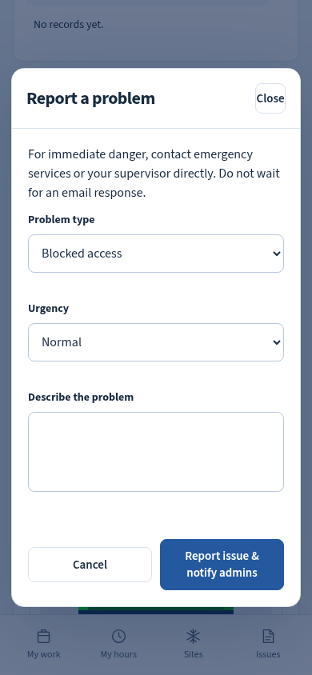
Pass — local fixture. Company reviews line/sub-line quantities and original versus claimed hours.
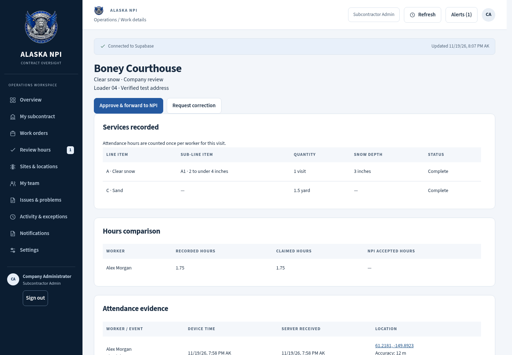
Pass — local fixture. Same private viewing file available to the company; original retained separately.
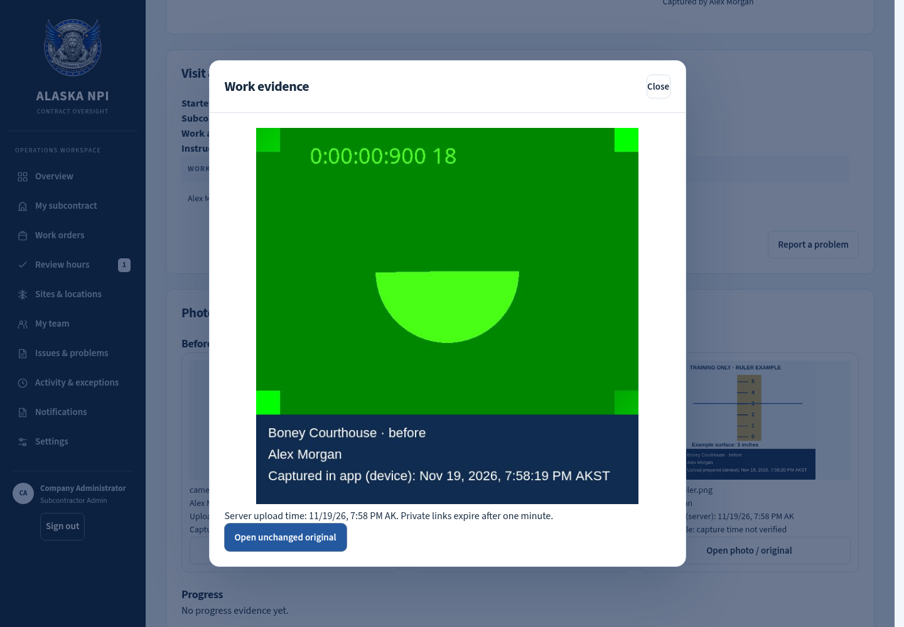
Pass — local fixture. Contract line and sub-line configuration remains in NPI administration.
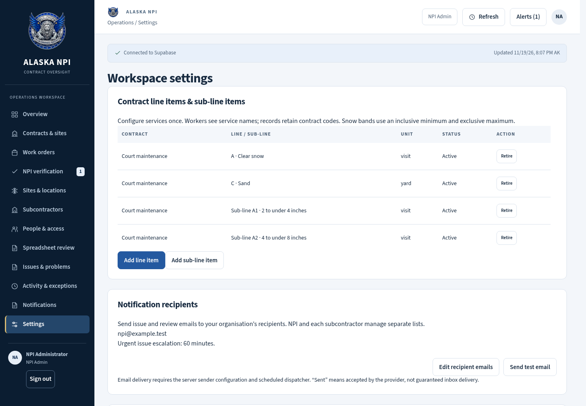
Pass — local fixture. Parent line sets contract, service category and unit. Snow minimum/maximum bounds are explicit.
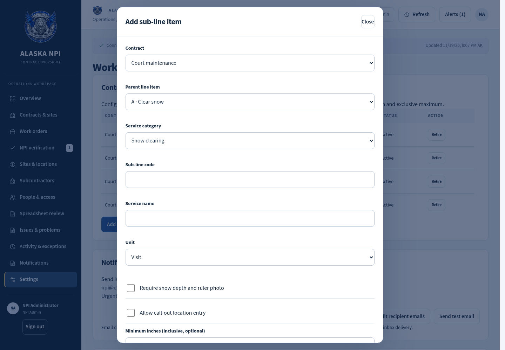
Pass — local fixture. Separate recipient list, escalation and daily-summary control.
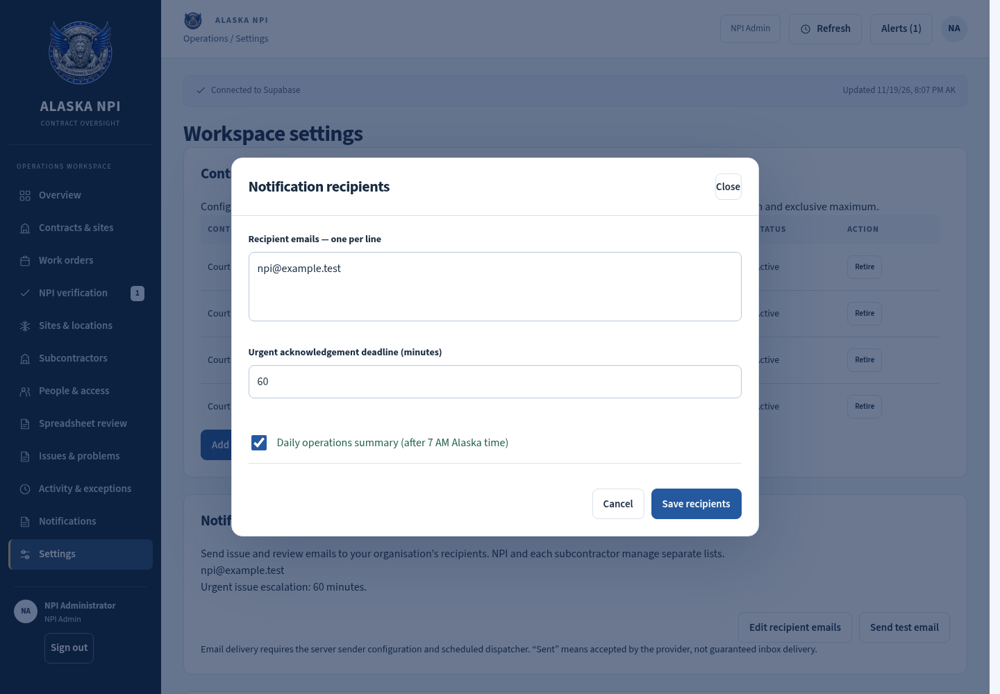
Pass — local fixture. Exact claimed hours or reasoned correction; approval still follows company review.
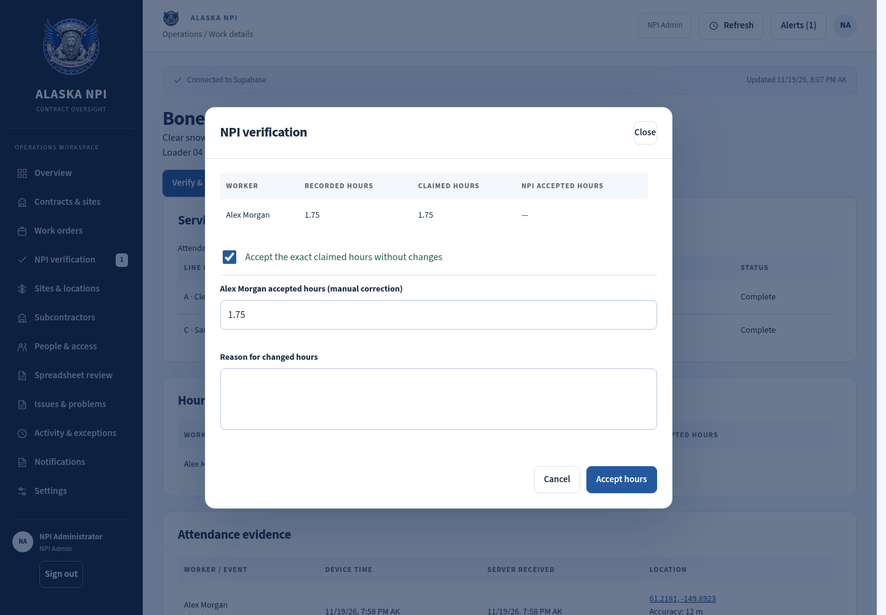